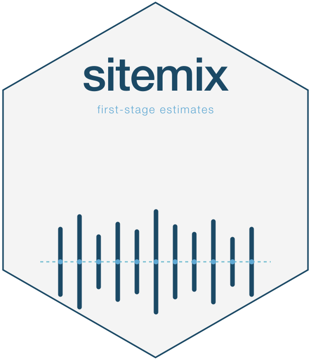

Estimating proportions from published aggregates
JoonHo Lee (jlee296@ua.edu)
2026-07-12
Source:vignettes/a5-published-aggregates.Rmd
a5-published-aggregates.RmdAbstract
Estimate site-year proportions from published numerator and denominator counts. Work with one or several marginal indicators, reshape subgroup tables, and identify suppressed rows before estimation.
Published tables often provide the numerator and denominator for each site-year without individual student records. For one proportion, use the single-indicator aggregate path (D0). For several marginal proportions, use the multivariate aggregate path (D1).
Missing joint counts and suppressed marginal values are different problems. Observed marginals can support individual rate estimates even when their cross-indicator covariance is unknown. A suppressed numerator, in contrast, cannot provide an observed proportion. The examples below keep these cases separate; Choosing an input format compares the aggregate path with student records and sufficient counts.
We use aggregate counts from the bundled, fully simulated
prek_sim data and a small generated subgroup table. These
are examples of data handling, not empirical findings about children or
programs (see ?prek_sim).
One numerator and denominator per site-year (D0)
D0 is the simplest publisher case: each row is one site-year with
explicit numerator (c_jt) and denominator
(n_jt). Build a D0 slice from the bundled counts file:
counts_path <- system.file(
"extdata", "prek_sim_counts.rds",
package = "sitemix", mustWork = TRUE
)
counts <- readRDS(counts_path)
d0_frpm <- counts[counts$year == 2024,
c("site_id", "year", "n_jt", "c_jt_frpm")]
d0_frpm$indicator <- "frpm"
d0_frpm$c_jt <- d0_frpm$c_jt_frpm
d0_frpm <- d0_frpm[c("site_id", "year", "indicator", "c_jt", "n_jt")]
head(d0_frpm, 3)
#> # A tibble: 3 × 5
#> site_id year indicator c_jt n_jt
#> <chr> <int> <chr> <int> <int>
#> 1 S001 2024 frpm 1 9
#> 2 S002 2024 frpm 8 10
#> 3 S003 2024 frpm 4 8The default column names are already present, so no explicit column mapping is needed. Estimate FRPM rates and their arcsine-scale standard errors:
est_d0 <- sm_estimate_from_aggregates(
d0_frpm,
family = "binomial",
indicator = "frpm"
)
head(est_d0, 3)
#> sitemix_estimates: 3 rows x 18 columns | family=binomial | role=summary_uncertainty
#> groups=3 sites=3 years=1 indicators=1 V=FALSE K=FALSE
#> # A tibble: 3 × 18
#> site_id year indicator theta_raw theta_hat se_raw se n n_eff
#> <chr> <int> <chr> <dbl> <dbl> <dbl> <dbl> <int> <dbl>
#> 1 S001 2024 frpm 0.111 0.340 0.105 0.167 9 9
#> 2 S002 2024 frpm 0.8 1.11 0.126 0.158 10 10
#> 3 S003 2024 frpm 0.5 0.785 0.177 0.177 8 8
#> # ℹ 9 more variables: estimate_scale <chr>, transform <chr>, var_method <chr>,
#> # flag_small_n <lgl>, flag_zero_cell <lgl>, input_mode <chr>,
#> # flag_suppressed <lgl>, framing <chr>, flag_below_accountability <lgl>
unique(est_d0$estimate_scale)
#> [1] "arcsine"Each row is one site’s FRPM estimate for 2024. The main estimate and
SE columns have the same meaning as in student-level binomial output:
theta_raw is the observed proportion, while
theta_hat and se use
estimate_scale. Here input_mode = "aggregate"
records the source format.
For a publisher file with different column names, use
numerator_col and denominator_col to map them
to c_jt and n_jt. An existing
suppression_flag is read by default;
suppression_col can name a different flag column. Do not
turn a suppressed count into zero. See the suppression example below for
how unavailable values are retained.
Several marginal proportions per site-year (D1)
D1 is the case where the publisher reports several marginal
indicators per site-year (e.g., FRPM rate + SNAP rate + WIC rate). Each
marginal becomes a row; cross-marginal correlation is unidentified from
marginals alone. With vjt = TRUE, sitemix uses a diagonal
V as a working-independence assumption; it does not
estimate zero dependence from the data.
Describe whether those marginals refer to the same observed units
with sampling_relation. Use "same_units" only
with source documentation that establishes a common sample,
"different_units" when the marginal samples are known to
differ, and the default "unknown" otherwise. Equal
denominators are recorded as a denominator pattern; they do not prove
common units.
# Build a long-form D1 slice with two marginals (FRPM, SNAP):
d1 <- counts[counts$year == 2024, ]
d1_long <- rbind(
data.frame(
site_id = d1$site_id, year = d1$year,
indicator = "frpm",
c_jt = d1$c_jt_frpm, n_jt = d1$n_jt
),
data.frame(
site_id = d1$site_id, year = d1$year,
indicator = "snap",
c_jt = d1$c_jt_snap, n_jt = d1$n_jt
)
)
head(d1_long, 4)
#> site_id year indicator c_jt n_jt
#> 1 S001 2024 frpm 1 9
#> 2 S002 2024 frpm 8 10
#> 3 S003 2024 frpm 4 8
#> 4 S004 2024 frpm 6 14The FRPM and SNAP counts below were built from the same simulated
students, so sampling_relation = "same_units" is justified
here. Requesting V produces
sitemix_warning_working_independence_default: the example
captures that expected warning, while any other warning stops the
render.
est_d1 <- capture_expected_sitemix_warning(
sm_estimate_from_aggregates(
d1_long,
family = "multivariate",
indicator_col = "indicator",
sampling_relation = "same_units",
vjt = TRUE
),
"sitemix_warning_working_independence_default"
)
head(est_d1, 4)
#> sitemix_estimates: 4 rows x 20 columns | family=multivariate | role=summary_uncertainty
#> groups=2 sites=2 years=1 indicators=2 V=TRUE K=TRUE
#> # A tibble: 4 × 20
#> site_id year indicator theta_raw theta_hat se_raw se n n_eff
#> <chr> <int> <chr> <dbl> <dbl> <dbl> <dbl> <int> <dbl>
#> 1 S001 2024 frpm 0.111 0.340 0.105 0.167 9 9
#> 2 S001 2024 snap 0.222 0.491 0.139 0.167 9 9
#> 3 S002 2024 frpm 0.8 1.11 0.126 0.158 10 10
#> 4 S002 2024 snap 0.7 0.991 0.145 0.158 10 10
#> # ℹ 11 more variables: estimate_scale <chr>, transform <chr>, var_method <chr>,
#> # flag_small_n <lgl>, flag_zero_cell <lgl>, input_mode <chr>,
#> # flag_suppressed <lgl>, framing <chr>, flag_below_accountability <lgl>,
#> # V <list>, K <int>Inspect the first site’s working-independence matrix and recorded assumptions:
V_d1 <- as.matrix(est_d1$V[[1L]])
round(V_d1, 4)
#> frpm snap
#> frpm 0.0278 0.0000
#> snap 0.0000 0.0278
est_d1$V[[1L]]$vcov_method
#> [1] "working_independence"
attr(est_d1, "sampling_relation")
#> [1] "same_units"
attr(est_d1, "denominator_pattern")
#> [1] "common"
attr(est_d1, "d1_regime")
#> [1] "D1a"The zero off-diagonals express the working assumption. In this D1
example, V is on the row’s arcsine scale and its diagonal
equals se^2. Keeping sampling_relation
separate from denominator_pattern makes the same-unit
assumption explicit; matching denominator values alone would not justify
it.
To explore the unidentified dependence, see Variance smoothing and
Fréchet sensitivity analysis and the Fréchet derivation.
Formal pairwise covariance ranges require complete same-unit marginals
with a common finite denominator, IID plug-in variance,
anscombe = FALSE, and no FPC or binomial_bc.
Those ranges are raw-scale quantities. PSD-projected matrices are stress
scenarios and need not be attainable joint covariance bounds.
Choose the unit of analysis for subgroup files
When the publisher file carries one row per
(site, year, subgroup) triple, you must pivot before
estimation. The choice between Framing X and Framing Y depends on your
question.
Both helpers map the fixed publisher total vocabulary
ALL, ALL STUDENT(S), TOTAL, and
OVERALL to ALL; matching ignores case,
surrounding whitespace, and punctuation between words. Framing X keeps
the publisher spelling in source_subgroup for audit while
using ALL in its composite key, and Framing Y uses
ALL as the indicator. Alias collisions fail as duplicates.
Mixed school/district/state rows are not routed automatically: split
them into homogeneous reporting-level tables before pivoting.
# Synthetic subgroup file (5 sites × 2 subgroups × 1 year)
subgroups <- expand.grid(
site_id = paste0("S", sprintf("%03d", 1:5)),
year = 2024L,
subgroup = c("ell", "non_ell"),
stringsAsFactors = FALSE
)
subgroups$c_jt <- c(8, 4, 7, 5, 9, 3, 10, 6, 5, 8)
subgroups$n_jt <- c(12, 6, 11, 9, 13, 7, 15, 10, 8, 12)
head(subgroups, 4)
#> site_id year subgroup c_jt n_jt
#> 1 S001 2024 ell 8 12
#> 2 S002 2024 ell 4 6
#> 3 S003 2024 ell 7 11
#> 4 S004 2024 ell 5 9Framing X — each subgroup becomes its own site
(composite site_id):
fx <- sm_pivot_subgroups_to_sites(
subgroups,
subgroup_col = "subgroup",
numerator_col = "c_jt",
denominator_col = "n_jt",
indicator = "frpm_take_up"
)
head(fx, 4)
#> # A tibble: 4 × 9
#> site_id year indicator c_jt n_jt suppression_flag framing source_site_id
#> <chr> <int> <chr> <int> <int> <lgl> <chr> <chr>
#> 1 S001_ell 2024 frpm_tak… 8 12 FALSE subgro… S001
#> 2 S001_non_… 2024 frpm_tak… 3 7 FALSE subgro… S001
#> 3 S002_ell 2024 frpm_tak… 4 6 FALSE subgro… S002
#> 4 S002_non_… 2024 frpm_tak… 10 15 FALSE subgro… S002
#> # ℹ 1 more variable: source_subgroup <chr>The default partition_target = "none" keeps each
subgroup’s own numerator and denominator. It prepares conditional rates
such as FRPM participation within ELL students; assigning a new site ID
does not turn them into shares of the whole site’s population.
For shares of a common site total, the same helper offers
"denominator_composition" and
"case_composition". Those options return wide category
counts for sm_estimate_from_counts(family = "multinomial").
They require mutually exclusive categories covering the relevant total,
a complete category set, and one ALL row per site-year. The
common n_jt is the category-count sum, checked against
ALL within the supplied tolerance. A missing category must
not be silently treated as zero. Denominator composition needs observed
denominators but permits suppressed numerators; case composition needs
observed numerators that are not suppressed.
Framing Y — each subgroup becomes a marginal
indicator of the original site. The ELL and non-ELL groups in this
example represent different students, so the call uses
sampling_relation = "different_units". For other data, use
that value only when the samples are known to differ; keep
"unknown" when the source does not establish their
relationship:
fy <- sm_pivot_subgroups_to_indicators(
subgroups,
subgroup_col = "subgroup",
numerator_col = "c_jt",
denominator_col = "n_jt"
)
head(fy, 4)
#> # A tibble: 4 × 8
#> site_id year indicator source_subgroup c_jt n_jt suppression_flag framing
#> <chr> <int> <chr> <chr> <int> <int> <lgl> <chr>
#> 1 S001 2024 ell ell 8 12 FALSE subgroup…
#> 2 S001 2024 non_ell non_ell 3 7 FALSE subgroup…
#> 3 S002 2024 ell ell 4 6 FALSE subgroup…
#> 4 S002 2024 non_ell non_ell 10 15 FALSE subgroup…
est_fy <- sm_estimate_from_aggregates(
fy,
family = "multivariate",
indicators = attr(fy, "indicator_set"),
framing = "subgroup_as_indicator",
sampling_relation = "different_units"
)In this example, both fx and fy retain the
subgroup-specific fractions. fx represents ten
subgroup-sites; fy represents five original sites with two
indicators each. The pivots change that organization, not the counts.
The default indicator pivot removes an entire site-year if a selected
subgroup is missing or suppressed. Use
na_action = "keep_na" to retain missing coordinates, then
choose the aggregate suppression handling explicitly.
Count suppressed and small-denominator rows
Before estimation, count how many rows are Tier 1
(publisher-suppressed), Tier 2 (observed below
accountability_n), or Tier 3 (observed at or above that
threshold). These labels describe the supplied counts and threshold;
they do not decide whether a publisher may release a result. Use sm_suppression_report().
d0_with_subgroup <- d0_frpm
d0_with_subgroup$subgroup <- "all"
report <- sm_suppression_report(
d0_with_subgroup,
by = c("subgroup", "year"),
numerator_col = "c_jt",
denominator_col = "n_jt",
indicator_col = "indicator",
subgroup_col = "subgroup"
)
print(as.data.frame(report), row.names = FALSE)
#> subgroup year n_rows n_tier1 n_tier2 n_tier3 n_suppressed_hidden_denominator
#> all 2024 50 0 33 17 0
#> n_denominator_missing pct_suppressed pct_below_accountability
#> 0 0 0.66
#> median_n_suppressed denominator_observed_on_suppressed suppression_sources
#> NA TRUE
#> recommended_action sensitivity_role
#> no_suppression_detected none
#> sensitivity_numeric_variance_available sensitivity_requires_acknowledgement
#> FALSE FALSE
#> upper_bound_role upper_bound_numeric_variance_available
#> not_applicable FALSE
#> upper_bound_requires_acknowledgement
#> FALSEThis complete simulated slice has no suppressed rows. On a publisher
file, pct_suppressed reports their share on a 0–1 scale.
The default suppression = "drop" retains those rows with
missing estimates and SEs.
If a separate variance-sensitivity analysis is warranted,
suppression = "upper_bound" with explicit acknowledgement
stores sensitivity_* fields. With an observed denominator
it uses the Bernoulli variance at p = 0.5; it does not fill in a
suppressed proportion. This option requires vst = "arcsine"
and anscombe = FALSE. Hidden denominators leave even the
numeric sensitivity variances missing. Neither kind of suppressed row
can supply an ordinary V or Fréchet input.
Check the example outputs
stopifnot(nrow(est_d0) == 50L)
stopifnot(identical(unique(est_d0$estimate_scale), "arcsine"))
stopifnot(nrow(est_d1) == 100L) # 50 sites × 2 marginals
stopifnot(est_d1$V[[1]]$vcov_method == "working_independence")
stopifnot(all(diag(as.matrix(est_d1$V[[1]])) > 0))
stopifnot(max(abs(as.matrix(est_d1$V[[1]])[lower.tri(as.matrix(est_d1$V[[1]]))])) < 1e-12)
stopifnot(nrow(fx) == 10L) # 5 sites × 2 subgroups
stopifnot(nrow(fy) == 10L)Related examples
- Checking estimates and handling suppressed data for the full three-tier audit workflow.
- Variance smoothing and Fréchet sensitivity analysis for D1 raw pairwise Fréchet intervals and projected stress scenarios.
- Sampling uncertainty from published aggregates for the formal derivations.